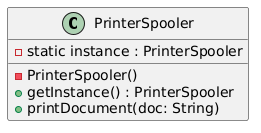

In an office network, multiple computers are connected to a single shared printer. If every computer sends print jobs directly to the printer at the same time, it could cause conflicts. So, we need a central system to manage the print requests — this is called a Printer Spooler.
The Printer Spooler:
Real World Benefit:
UML Diagram:
Output:
Printer Spooler Initialized Printing: Employee Report.pdf Printing: Annual Budget.xlsx true